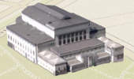
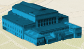
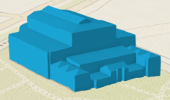
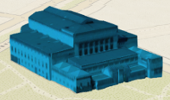

Coloring options for textured buildings
Note: Support for 3D on mobile devices may vary, view the system requirements for more information.
This sample shows the most common use cases of coloring textured buildings and other 3D objects in a SceneLayer. In urban planning it's important to emphasize certain buildings. We can achieve that now by keeping the textures on the important buildings and removing it on the less important ones. We still want to keep all the buildings for context, but texture will only be applied to the buildings of interest.
Desaturating textures can be used in the same purpose. We only care about texture colors for certain buildings of interest.
Several options are available when changing colors on textured buildings. These options can be set through the colorMixMode property of the FillSymbol3DLayer.material.
For example if the building has this initial texture:

Using tint will set the new color on the desatured texture:

var symbol = {
type: "mesh-3d", // autocasts as new MeshSymbol3D()
symbolLayers: [{
type: "extrude", // autocasts as new FillSymbol3DLayer()
material: {
color: "blue",
colorMixMode: "tint"
}
}]
};
replace will replace the texture with the new color:

multiply will multiply the initial texture color with the new color. When the buildings have a colorful texture, the final color will be quite dark. In our example, the roof of the building has a red tone and the resulting color will be dark after the multiplication with blue:
